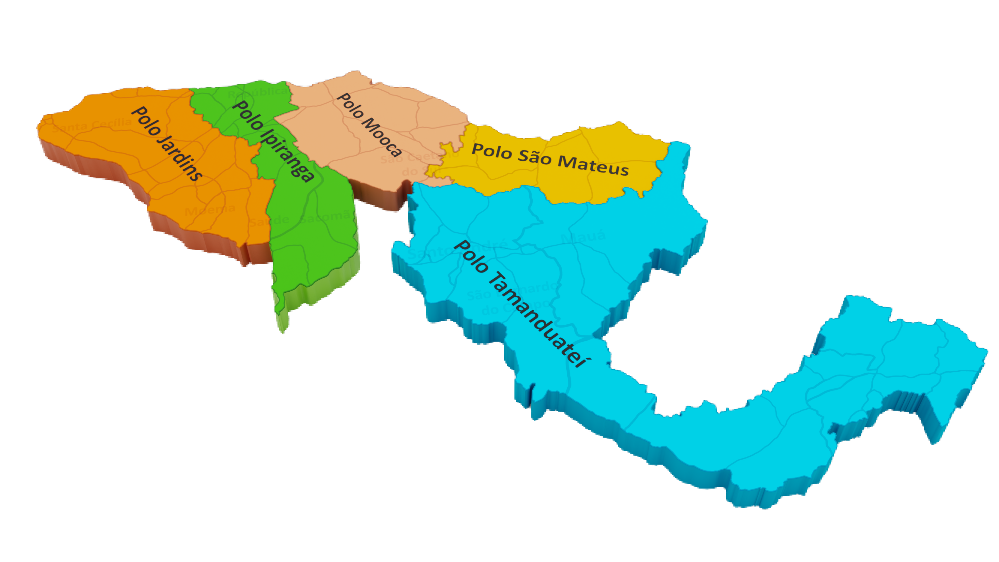

<div class="tela">
    <div class="div">
      <div class="overlap-group">
        <div class="superintend-ncia">SUPERINTENDÊNCIA</div>
        <div class="centro">CENTRO</div>
      </div>
      <div class="overlap">
        <div class="overlap-2">
          <p class="compreende-os-munic">
            <span class="text-wrapper">Compreende os municípios de </span>
            <span class="span">São Paulo, Mauá e Santo André</span>
            <span class="text-wrapper"> atendidos por 5 polos de manutenção.<br /><br /></span>
            <span class="span">Área Total:  </span>
            <span class="text-wrapper">519km²<br /></span>
            <span class="span">População Atendida:</span>
            <span class="text-wrapper"> 4,5 mi<br /></span>
            <span class="span">População Flutuante:</span>
            <span class="text-wrapper"> 1,5 mi<br /></span>
          </p>
          
        </div>
        <div class="div-wrapper"><div class="text-wrapper-2">98,50%</div></div>
        <div class="overlap-3"><div class="text-wrapper-3">97,80%</div></div>
        <div class="overlap-4"><div class="text-wrapper-4">88,50%</div></div>
      </div>
      <div class="group" [routerLink]="['/inicio']"></div>
      
      
      
      
      <div class="vector-wrapper"  [routerLink]="['/menu']"></div>
    </div>
</div>

